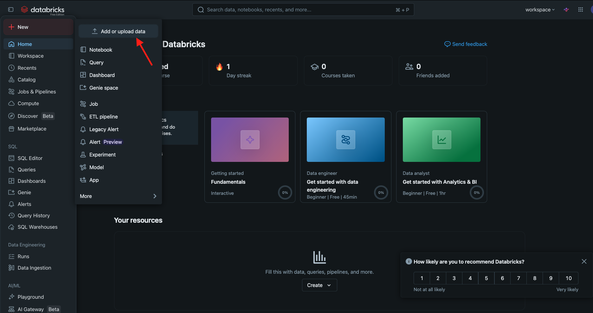
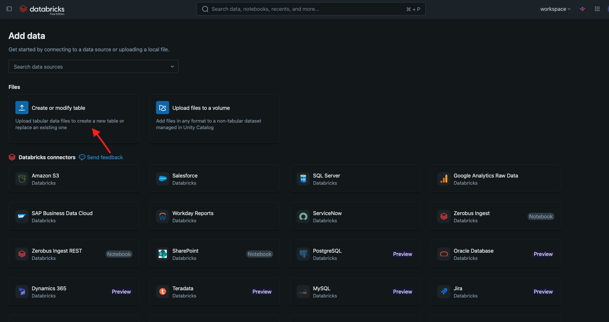
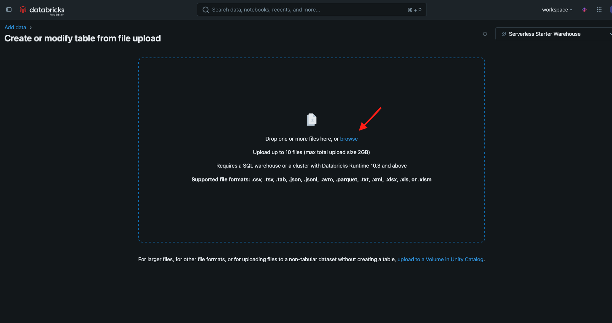
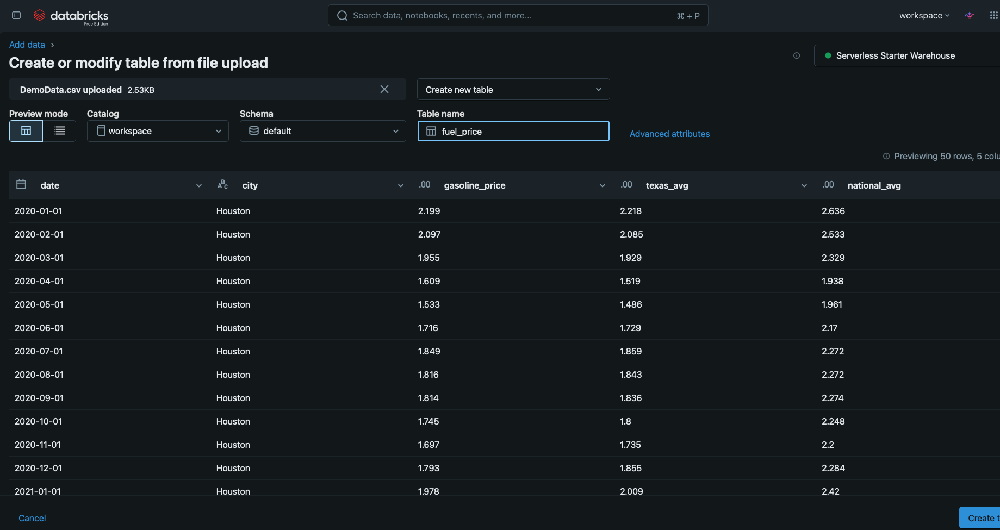
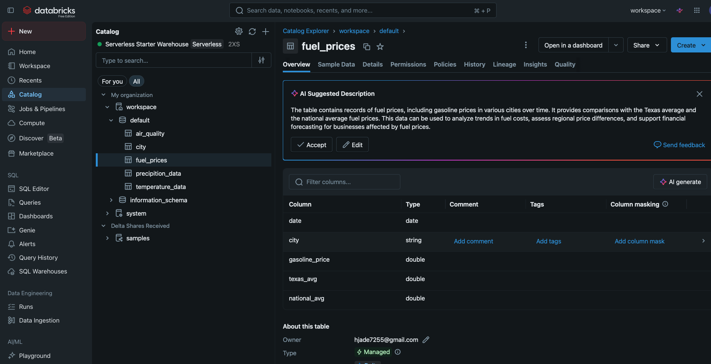
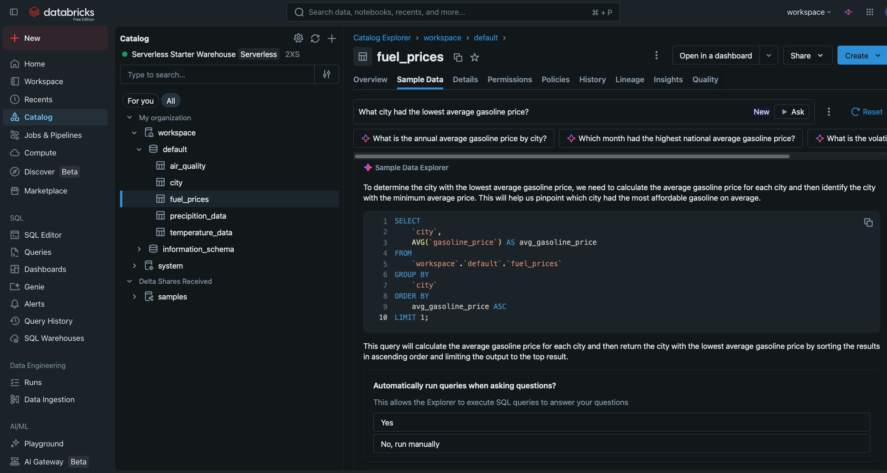
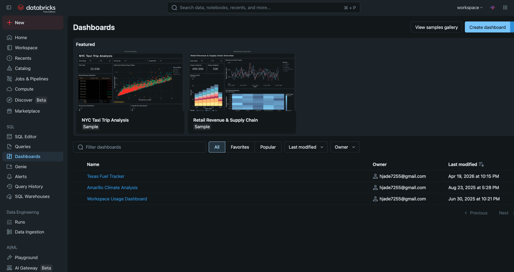
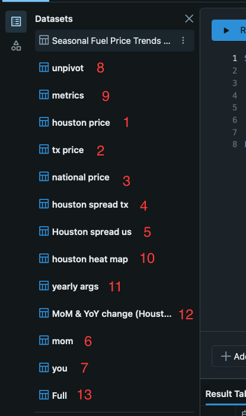
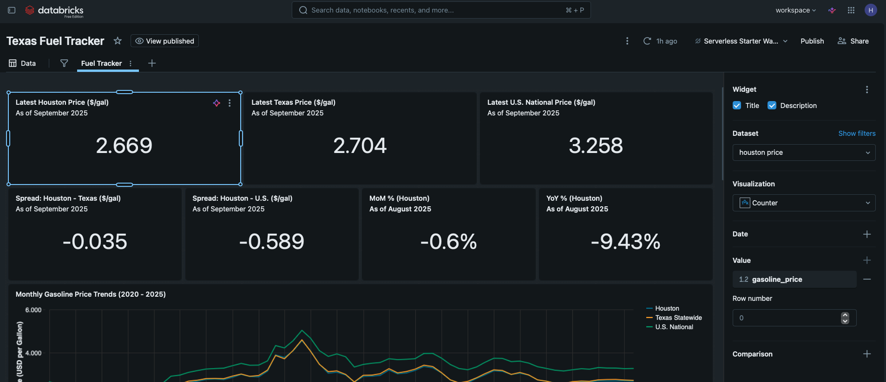

A Simple Databricks Walkthrough
This page walks through a complete but simple example of using Databricks to work with data from start to finish. The goal is to show that getting from a raw CSV file to a working interactive dashboard in Databricks does not require a programming background or years of database experience. By following these nine steps, someone new to the platform can understand how data gets loaded into the system, how a table is created and stored in the catalog, how SQL queries become reusable datasets, and how those datasets drive the visuals in a Databricks dashboard. Everything shown here uses real screenshots taken during an actual demo project built specifically for this site.
The starting point for this demo is a CSV file called DemoData.csv, which contains monthly fuel pricing data for the city of Houston, Texas. Each row in the file includes a date, the gasoline price for Houston, the Texas statewide average, and the national average. This kind of structured, consistent dataset works well in Databricks because it has a clear time dimension and naturally supports trend analysis and regional comparisons. The file is small enough to upload directly through the Databricks interface, which is one of the features this walkthrough demonstrates. A download link is provided below if you want to follow along using the same data.
The finished result of this walkthrough is a dashboard called the Texas Fuel Tracker. The dashboard includes thirteen different visuals: seven counter tiles showing the most recent prices and spreads, four line charts tracking trends over time, one heat map showing price by month and year, and one bar chart comparing annual averages across Houston, Texas, and the national level. Building this kind of dashboard in Databricks starts with writing the SQL queries that define each dataset, then connecting those datasets to chart types inside the dashboard editor. The steps below walk through each part of that process in plain language, with screenshots to show what each stage looks like in practice.
Walkthrough Overview
The following list summarizes all nine steps in order. Detailed explanations and screenshots for each step appear in the section below.
- Download DemoData.csv from the inputs folder using the link above.
- In Databricks, use the left sidebar to navigate to the Add or Upload Data option.
- Choose Create or Modify Table, browse for the CSV file, select a schema, and name the table fuel_prices.
- Go to Catalog, open the schema, click the fuel_prices table, and review the sample data preview.
- In the sample data area, review the AI-suggested questions that Databricks generates automatically and optionally run any of them to see the generated SQL.
- Navigate to Dashboards in the left sidebar and create a new dashboard.
- Inside the dashboard editor, open Data and add each SQL query as its own named SQL dataset.
- For each visual, use the right sidebar to choose a chart type, connect the correct dataset, and assign the appropriate columns to axes and color groupings.
- Name the finished dashboard Texas Fuel Tracker and review the final result.
Detailed Walkthrough
Step 1: Download the Demo Data
Before doing anything in Databricks, download the file DemoData.csv using the link in the download box above. This file is the foundation of the entire demo and contains the fuel pricing data that will be uploaded, stored as a table, and queried throughout the rest of the walkthrough. The file is a flat CSV with column headers in the first row, making it straightforward for Databricks to read and parse automatically when it is uploaded. Save it somewhere easy to find on your computer since you will need to browse to it in the next step.
Step 2: Navigate to Data Upload in Databricks
Once you are logged into your Databricks workspace, look at the left sidebar. Find and click the option labeled Add or Upload Data. The exact label and icon may vary slightly depending on your workspace configuration, but it is typically near the bottom of the sidebar menu or accessible from a plus icon. Clicking it will open a new screen where Databricks presents different options for how to bring data into the platform. This is the entry point for manually uploading a file, which is the method used in this demo.

Image source: personal Databricks screenshot by site author.
Step 3: Create the fuel_prices Table
On the upload data screen, select the option to Create or Modify Table. This will open a dialog where you can browse your computer for the file you want to upload. Click the browse button, navigate to where you saved DemoData.csv, and select it. Databricks will read the file and display a preview of the columns and a sample of the rows. From there, choose the schema where the table should be stored, and set the table name to fuel_prices. Once the settings look correct, click the button to create the table. Databricks will upload the file and register it as a permanent table in the catalog.

Image source: personal Databricks screenshot by site author.

Image source: personal Databricks screenshot by site author.

Image source: personal Databricks screenshot by site author.
Step 4: Review the Table in Catalog
After the table is created, go to Catalog in the left sidebar. Find the schema you selected during the upload step, open it, and click on the fuel_prices table. Databricks will display the table schema, showing each column name and its data type, along with a sample data preview that shows the first several rows of the table. This is a good place to confirm that the data was loaded correctly, that the column names match what you expected, and that the date and numeric columns were parsed with the right data types. If anything looks off, you can drop the table and re-upload with adjusted settings.

Image source: personal Databricks screenshot by site author.
Step 5: Explore AI-Suggested Questions
While viewing the table in the Catalog, Databricks may display a section with suggested questions powered by its AI assistant, sometimes called Databricks Genie. These are auto-generated prompts based on the structure of your table, such as questions about averages, recent values, or comparisons between columns. Clicking on any of these questions will generate a SQL query automatically and run it against the table. This feature is not required for building the dashboard, but it is a useful demonstration of how Databricks tries to make data exploration more accessible. For the fuel_prices table, example suggestions might include questions about the most recent price, the highest price on record, or how Houston compares to the national average.

Image source: personal Databricks screenshot by site author.
Step 6: Create a New Dashboard
To start building the dashboard, navigate to Dashboards in the left sidebar. This section lists any existing dashboards in your workspace and provides a button to create a new one. Click to create a new dashboard and Databricks will open an empty dashboard editor. The editor has a canvas in the center where visuals will be placed and a right sidebar for configuration. Before adding any charts, the first task is to define the data sources, which are added as SQL datasets in the next step.

Image source: personal Databricks screenshot by site author.
Step 7: Add SQL Datasets
Inside the dashboard editor, find the Data section, typically in the right panel or through a menu option at the top. This is where SQL datasets are defined. Each dataset is a named SQL query that the dashboard stores and can reuse across multiple visuals. For this demo, you will add thirteen SQL datasets, one for each query listed in the SQL Datasets section below. Give each dataset the name shown in the dataset headers, then paste in the corresponding SQL. Databricks will run the query and confirm that it returns data before saving it. Keeping each dataset focused on a single question makes it easier to manage and connect to the right visual later on.

Image source: personal Databricks screenshot by site author.
Step 8: Configure Visualizations
Once the SQL datasets are saved, you can start adding visuals to the dashboard canvas. Click to add a new visualization, then use the right sidebar to configure it. The sidebar lets you choose the chart type, such as counter, line chart, bar chart, or heat map, and then connect it to the appropriate dataset. After selecting a dataset, you will assign columns to the axes and groupings. For example, a line chart might use date on the x-axis, price on the y-axis, and series as the color grouping. The visual mapping table below this walkthrough shows the full configuration for all thirteen visuals in the Texas Fuel Tracker dashboard. The screenshot below shows an example of a completed chart configuration in the dashboard editor sidebar.

Image source: personal Databricks screenshot by site author.
Step 9: Name and Review the Dashboard
After all thirteen visuals are added and configured, click on the dashboard title at the top of the editor and rename it to Texas Fuel Tracker. At this point, the dashboard is complete. You can publish it to share it with others in the workspace, or simply use it for your own analysis. The finished dashboard gives a clear picture of fuel price trends in Houston over time, how Houston prices compare to Texas and national averages, and how prices have changed from month to month and year to year. This entire result was built from a single uploaded CSV file and a set of SQL queries, without any external tools or programming beyond standard SQL.
SQL Datasets Used in This Dashboard
Each block below is a separate SQL dataset. In the Databricks dashboard editor, each one should be added individually using the name shown in the heading. Paste the SQL into the dataset editor, verify that it returns data, and save it before moving on to the next one. All datasets query the fuel_prices table created in Step 3.
Dataset 1: houston price
SELECT date, gasoline_price FROM fuel_prices WHERE city = 'Houston' ORDER BY date DESC LIMIT 1;
Dataset 2: tx price
SELECT date, texas_avg FROM fuel_prices WHERE city = 'Houston' ORDER BY date DESC LIMIT 1;
Dataset 3: national price
SELECT date, national_avg FROM fuel_prices WHERE city = 'Houston' ORDER BY date DESC LIMIT 1;
Dataset 4: houston spread tx
SELECT date, gasoline_price - texas_avg AS spread FROM fuel_prices ORDER BY date DESC LIMIT 1;
Dataset 5: houston spread us
SELECT date, gasoline_price - national_avg AS spread FROM fuel_prices ORDER BY date DESC LIMIT 1;
Dataset 6: mom
WITH m AS (
SELECT
date,
(gasoline_price - LAG(gasoline_price, 1) OVER (ORDER BY date))
/ NULLIF(LAG(gasoline_price, 1) OVER (ORDER BY date), 0) AS mom_pct
FROM fuel_prices
)
SELECT date, mom_pct
FROM m
WHERE mom_pct IS NOT NULL
ORDER BY date DESC
LIMIT 1;
Dataset 7: yoy
WITH y AS (
SELECT
date,
(gasoline_price - LAG(gasoline_price, 12) OVER (ORDER BY date))
/ NULLIF(LAG(gasoline_price, 12) OVER (ORDER BY date), 0) AS yoy_pct
FROM fuel_prices
)
SELECT date, yoy_pct
FROM y
WHERE yoy_pct IS NOT NULL
ORDER BY date DESC
LIMIT 1;
Dataset 8: unpivot
SELECT date, 'Houston' AS series, gasoline_price AS price FROM fuel_prices UNION ALL SELECT date, 'Texas Statewide' AS series, texas_avg AS price FROM fuel_prices UNION ALL SELECT date, 'U.S. National' AS series, national_avg AS price FROM fuel_prices;
Dataset 9: metrics
WITH base AS (
SELECT
date,
city,
gasoline_price,
texas_avg,
national_avg,
(gasoline_price - texas_avg) AS spread_vs_tx,
(gasoline_price - national_avg) AS spread_vs_us,
YEAR(date) AS yr,
MONTH(date) AS mo
FROM fuel_prices
),
lagged AS (
SELECT
*,
LAG(gasoline_price, 1) OVER (ORDER BY date) AS prev_m,
LAG(gasoline_price, 12) OVER (ORDER BY date) AS prev_y,
AVG(gasoline_price) OVER (ORDER BY date ROWS BETWEEN 2 PRECEDING AND CURRENT ROW) AS roll_3m_avg,
STDDEV_SAMP(gasoline_price) OVER (ORDER BY date ROWS BETWEEN 5 PRECEDING AND CURRENT ROW) AS roll_6m_vol
FROM base
)
SELECT
*,
CASE WHEN prev_m IS NULL OR prev_m = 0 THEN NULL
ELSE (gasoline_price - prev_m) / prev_m END AS mom_pct,
CASE WHEN prev_y IS NULL OR prev_y = 0 THEN NULL
ELSE (gasoline_price - prev_y) / prev_y END AS yoy_pct
FROM lagged
ORDER BY date;
Dataset 10: houston heat map
SELECT YEAR(date) AS year, MONTH(date) AS month_num, DATE_FORMAT(date, 'MMM') AS month_lbl, AVG(gasoline_price) AS avg_price FROM fuel_prices GROUP BY 1, 2, 3 ORDER BY 1, 2;
Dataset 11: yearly avgs
WITH yrs AS (
SELECT
YEAR(date) AS year,
AVG(gasoline_price) AS houston_avg,
AVG(texas_avg) AS texas_avg,
AVG(national_avg) AS us_avg
FROM fuel_prices
GROUP BY YEAR(date)
)
SELECT year, 'Houston' AS series, houston_avg AS avg_price FROM yrs
UNION ALL
SELECT year, 'Texas Statewide', texas_avg FROM yrs
UNION ALL
SELECT year, 'U.S. National', us_avg FROM yrs
ORDER BY year, series;
Dataset 12: mom-yoy change
WITH calc AS (
SELECT
date,
gasoline_price,
LAG(gasoline_price, 1) OVER (ORDER BY date) AS prev_m,
LAG(gasoline_price, 12) OVER (ORDER BY date) AS prev_y,
CASE
WHEN LAG(gasoline_price, 1) OVER (ORDER BY date) IS NULL THEN NULL
ELSE (gasoline_price - LAG(gasoline_price, 1) OVER (ORDER BY date))
END AS mom_abs,
CASE
WHEN LAG(gasoline_price, 1) OVER (ORDER BY date) IS NULL
OR LAG(gasoline_price, 1) OVER (ORDER BY date) = 0 THEN NULL
ELSE (gasoline_price - LAG(gasoline_price, 1) OVER (ORDER BY date))
/ LAG(gasoline_price, 1) OVER (ORDER BY date)
END AS mom_pct,
CASE
WHEN LAG(gasoline_price, 12) OVER (ORDER BY date) IS NULL
OR LAG(gasoline_price, 12) OVER (ORDER BY date) = 0 THEN NULL
ELSE (gasoline_price - LAG(gasoline_price, 12) OVER (ORDER BY date))
/ LAG(gasoline_price, 12) OVER (ORDER BY date)
END AS yoy_pct
FROM fuel_prices
WHERE city = 'Houston'
)
SELECT date, 'MoM %' AS metric, mom_pct AS pct
FROM calc
WHERE mom_pct IS NOT NULL
UNION ALL
SELECT date, 'YoY %' AS metric, yoy_pct AS pct
FROM calc
WHERE yoy_pct IS NOT NULL
ORDER BY date, metric;
Dataset 13: full
SELECT * FROM fuel_prices;
Dashboard Visual Reference
The table below shows how each visual in the Texas Fuel Tracker dashboard is configured, including which dataset powers it and what values are assigned to each axis or grouping. Use this as a reference when adding and setting up each chart in the dashboard editor.
| Visual | Chart Type | Dataset | Configuration |
|---|---|---|---|
| 1 | Counter | houston price | Value: gasoline_price |
| 2 | Counter | tx price | Value: texas_avg |
| 3 | Counter | national price | Value: national_avg |
| 4 | Counter | houston spread tx | Value: spread |
| 5 | Counter | houston spread us | Value: spread |
| 6 | Counter | mom | Value: mom_pct |
| 7 | Counter | yoy | Value: yoy_pct |
| 8 | Line Chart | unpivot | X: monthly(date) — Y: price — Color: series |
| 9 | Line Chart | metrics | X: monthly(date) — Y1: spread_vs_tx — Y2: spread_vs_us |
| 10 | Heat Map | houston heat map | X: month_lbl — Y: year — Color: avg_price |
| 11 | Bar Chart | yearly avgs | X: year — Y: avg_price — Color: series — Labels: on |
| 12 | Line Chart | mom-yoy change | X: monthly(date) — Y: pct — Color: metric |
| 13 | Table | full | Columns: all |
Have a Question About This Demo?
If something in this walkthrough was unclear, or if you have questions about how to adapt these steps to your own data, use the form below to send a question. Include as much detail as you can in the message field so the response can be as specific as possible.